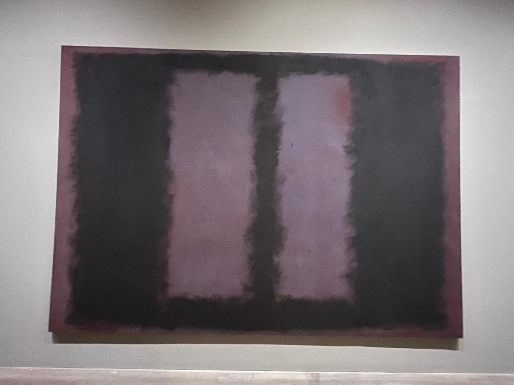
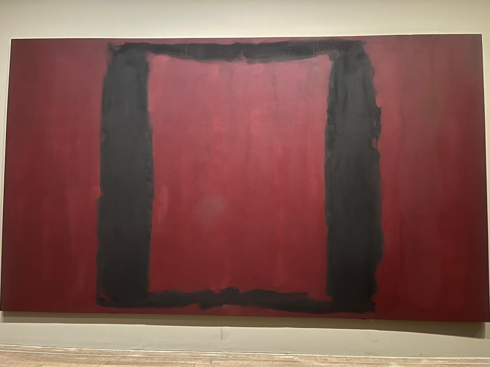
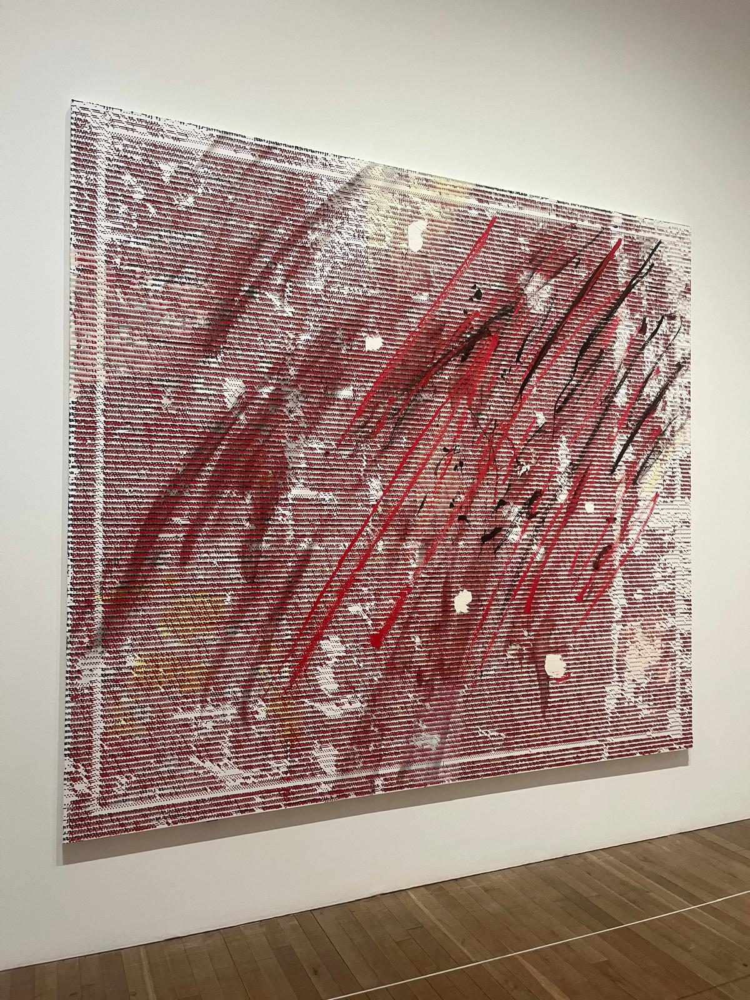

Hi. This is an essay about some artworks I saw, and how they caused me to look more sympathetically towards a world of art I didn’t previously care for that much.
I have always been a fan of contemporary art, but abstract art (specifically abstract painting) never really did it for me. I’ve never really been moved by a Mondrian or a Kandinsky, I’d even say that I still am not. I understand the philosophy of such works on a theoretical level, whether it is to create something beautiful without referring directly to a visible object existing in reality, to convey abstract concepts like emotions by how they manifest in the artist’s own mind, to explore the process of artmaking through randomness or the natural movements of the body… but it just never clicked for me. Forms that signified no decipherable meaning, those that referred to nothing but themselves were too foreign to me. I just couldn’t relate to art which didn’t refer to something extant. Now I am not one of those people that will decry forms of art I don’t understand as lesser or as “Not art”: I fuck with Fountain and even to some extent the duct tape banana and I will call almost anything made by humans. Don’t even joke lad. I just always recognized that abstract art wasn’t really for me, and that that was perfectly okay.
I, like many in my generation, come from a culture of reference. The advent of the internet and especially social media has increasingly fed our human impulse to recognize patterns and use them to convey meaning to an ingroup who will recognize them. Even though nowadays this manifests in my daily life as memes, widely known social media phenomena and Deltarune brainrot (freedom big shot world revolving penumbra phantasm) artists have obviously been using this pattern recognition impulse for ages to convey meaning. Paintings which depict people can use their bodies, clothes, expressions and mannerisms to tell a story. For this reason art that depicts humans may be the easiest for us to relate to, whether those figures are abstracted to some degree or not. But even in a traditional still life, the objects depicted often convey meaning. National foods like local cheeses are used to express pride in one’s country. Cut fruit, often specifically the pomegranate, are used to convey sensuality and lust. A skull is placed alongside riches to remind the observer that all of that wealth is impermanent. But how is meaning conveyed when the art refers to nothing tangible or recognizable from our daily life?
The reason I find abstract art difficult to interpret is that I am prone to the side of art analysis which more resembles a murder investigation. You look at a piece of art and you begin an investigation. The clues to its true meaning start with the medium, material, form, texture, composition, subject, setting, lighting, anything you can see and connect a meaning to. Further information may come from cultural context and background. If in this analogy the artist is the murderer, they can confess their motives and their intentions as much as they like which can help you interpret the crime scene but since you can’t go back and watch it happen or be privy to their inner thoughts, all you can do is speculate what parts of their testimony are accurate and what is exaggerated, how much of the crime was intentional and how much was accidental. Abstract art limits the amount of clues you get. You can no longer decipher things at the layer of depiction: subject, setting and lighting no longer have a corollary in real life. In a sense, the amount of objectivity that is possible in describing the artwork is decreased. Even though it is very likely that no description of a visual work into writing can ever be entirely objective, there is much less to hang on to when you have to describe abstract forms. You can say that it depicts squares, circles or lines but what the culmination of those forms look like to the viewer or how it makes them feel will change much more drastically than a realistic depiction of extant objects.
So, how does this affect the game of deduction? Quite badly, I’d say. My Deltarune theory brainrot level of analysis is interrupted for... Some lines? Some shapes and colors? I am often not fond of abstract art because I dislike sitting in the discomfort of something I can’t fully interpret via bullet points. I often find these works less interesting, because their proposition of “just look at them and see how you feel” feels too banal, too cliche. That can’t be the only meaning there, right? Obviously how it makes you feel is also a factor in the art interpretation process but when it’s the entire point it just becomes dull, right?
Oh brother.


Last month I went and saw the room of Mark Rothko’s “Seagram Murals” in the Tate Modern. It was a religious experience. I think I’ve figured out that when it comes to abstract art, size matters, at least to me. The full effect of Rothko’s work is only really felt when you are standing right in front of one of those massive canvases in person and you submit yourself fully to its power. The brush strokes are layered in no identifiable pattern, yet they form a beautiful order of their own. The color has an unexplainable amount of depth to it. There is something so melancholy to those paintings and how they are displayed that deeply moved me.
The Seagram Murals are a set of giant monoliths that surround you on all sides. I haven’t been to Stonehenge, but I imagine these paintings evoke a similar sensation. It is like standing within a circle of old gods, understanding and being understood. Later reading about Rothko and what he said he aimed to invoke with his art, I felt vindicated. He held strongly that these feelings were the point of the art. Not the symbolism, not the technical ability: all of that was a tool to make you feel how he wanted you to feel, to return the observer to a primal state of pure emotion. It was the exact cure I needed for my overthinking.

The other artwork that left me in awe was Jacqueline Humphries’s “~?j.h%”. It consists of a large canvas covered with repeating print that reads “~?j.h%”, slashed through with brushstrokes of red, black and white paint. What really struck me about this work is the obvious juxtaposition it presents between the neat printing of the text and the chaotic splattering of the paint. However, the more I thought about it the more the two stopped feeling so disconnected from one another.
Letters and language are a tool for creating and conveying meaning, but Humphries subverts this expectation by using a series of randomized characters. Language is a medium wherein meaning is maximally objective but resemblance with the object being referred to is minimal. The word “pipe” refers to the object of the pipe but doesn’t visually or physically resemble it. Images refer to objects by depicting them visually, but leave certain aspects up to interpretation, especially when they become more abstract. Of course, neither of these depictions actually are a literal pipe, but simply refer to the concept of one. Hence, “Ceci n’est pas une pipe” (The Treachery of Images, René Magritte). By using language that doesn’t directly refer to any extant objects but still conveys an abstract “feeling”, Humphries explores a uniquely contemporary form of creating meaning. Of course seeing the phrase “~?j.h%” repeated over and over again made me feel something. After all, haven’t most of us deleted a keysmash before to retype it because it just “didn’t feel right”?
The qualities that appealed to me about this painting were almost the inverse of what I connected with in the Seagram Murals. The methodical printing of what reads like a keyboard smash so directly references the digital age, in contrast to Rothko’s connection to something more primordial, yet they both managed to convey a feeling above conveying a meaning or thesis to decipher. Of course thinking and learning about the works afterwards made them shine even brighter in my mind, but even just standing there I was happy to have experienced these works without immediately pulling out the pins and red string.